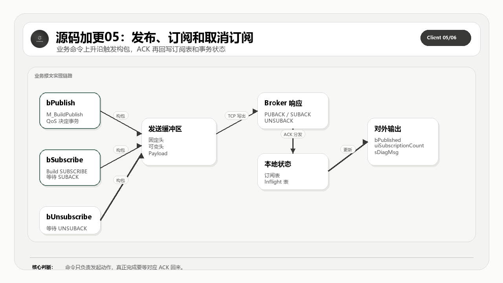

这一篇完整公开发布、订阅、取消订阅的报文构建和业务响应处理。这是 MQTT Client 从“能连上”走到“能干活”的关键层。
适合谁收藏
- 想对照 PUBLISH/SUBSCRIBE 报文字段和 ST 代码的读者。
- 需要排查主题过滤器、订阅表和业务命令边界的工程师。
- 想知道 QoS0/1/2 在发布报文中如何分流的人。
本篇核心图

读图重点：先看源码对象之间的职责边界，再看数据、状态和错误如何沿着调用链流动。源码加更不是把文件名列出来，而是把完整代码、工程意图和验证口径一起讲清楚。
先给结论
PUBLISH、SUBSCRIBE、UNSUBSCRIBE 都是业务动作，但它们对状态机的要求不一样。发布要管 QoS 和 PacketId，订阅要管 Topic Filter 和 SUBACK，取消订阅要管本地订阅表收口。
从理论到代码实现链路
MQTT 标准给的是报文类型、固定头、可变头、载荷、QoS 交互和会话语义；PLC 工程真正要解决的是周期扫描、缓冲区长度、错误锁存、在线变量、连接重入和现场可诊断性。
所以这套开源实现不能只按协议章节拆，也不能只按文件名拆。正确读法是把标准约束翻译成程序对象：入口程序负责给命令和观测点，GVL 和 DUT 定义容量与数据模型，主功能块负责调度状态机，构建方法负责出站报文，处理方法负责入站报文，辅助方法负责长度、队列、事务、主题和诊断边界。
本篇完整公开业务报文构建、PUBLISH/SUBACK/UNSUBACK 处理和订阅表辅助方法。
再往下一层看，这里其实有两条线同时存在。第一条是协议线：固定头、Remaining Length、PacketId、QoS、Topic、Payload 和 Reason Code 必须能按 MQTT 规则组合起来。第二条是 PLC 工程线：每个周期只能推进有限步骤，所有中间状态都要能被在线变量观察，所有错误都要能被锁存并归类，所有缓冲区长度都要在写入前被检查。
这就是源码加更必须完整公开的原因。只给几段核心片段，读者最多能看懂某个判断；把完整对象放出来，读者才能看到对象之间如何传递状态、长度、错误和诊断信息。完整源码讲解不是为了堆代码，而是为了让读者能从标准约束一路追到可运行的 ST 对象，再从现场现象反向定位到具体边界。
本篇公开的完整源码范围
| 序号 | 源码对象 | 讲解重点 |
|---|---|---|
| 1 | M_BuildPublishPacket.st | 出站报文构建，把引脚命令翻译成 MQTT 字节流 |
| 2 | M_BuildSubscribePacket.st | 出站报文构建，把引脚命令翻译成 MQTT 字节流 |
| 3 | M_BuildUnsubscribePacket.st | 出站报文构建，把引脚命令翻译成 MQTT 字节流 |
| 4 | M_HandlePublish.st | 入站报文处理，把 MQTT 响应落到状态和诊断 |
| 5 | M_HandleSubAck.st | 入站报文处理，把 MQTT 响应落到状态和诊断 |
| 6 | M_HandleUnsubAck.st | 入站报文处理，把 MQTT 响应落到状态和诊断 |
| 7 | M_IsValidTopicFilter.st | 源码对象职责和验证边界 |
| 8 | M_SubListAdd.st | 源码对象职责和验证边界 |
| 9 | M_SubListClear.st | 源码对象职责和验证边界 |
| 10 | M_SubListRemove.st | 源码对象职责和验证边界 |
怎么读这些源码
第一遍只看对象职责：这个文件解决哪一层问题，是入口、模型、状态、构建、接收、事务，还是诊断。
第二遍看边界变量：长度、索引、PacketId、QoS、状态枚举、错误码、缓冲区水位和在线观测量。PLC 通信代码最怕的是“能跑但不可诊断”，所以每个关键对象都要问一句：现场出问题时，我能不能从它留下的变量看出原因。
第三遍再看具体语句。源码全部公开，不等于读者要从第一行顺序读到最后一行。更稳的方式是用图和表先建立地图，再回到完整代码里确认每个边界确实落地。
工程验证路径
验证时看三组量：出站报文长度是否正确，SUBACK/UNSUBACK 是否更新本地订阅表，PUBLISH 接收后是否锁存主题和载荷。
本篇完整开源代码
完整代码 1：M_BuildPublishPacket.st
这一段完整公开 M_BuildPublishPacket.st。读代码时先看对象职责，再看状态、长度、错误和返回值，不要只抄几行赋值。
/// =======================================================================
/// 名称 : M_BuildPublishPacket
/// 功能 : 构建 PUBLISH 发送报文
/// 说明 : 根据主题、载荷、QoS 和协议版本组装发布报文。
/// 编程人员 : ControlRookie
/// 时间 : 2026-05-05
/// 版本 : V1.1
/// =======================================================================
{attribute 'hide_all_locals'}
METHOD M_BuildPublishPacket : BOOL
VAR
uiPos : UINT := 0; // 当前写入发送缓冲区的位置偏移[byte]
uiVarHeaderLen : UINT; // PUBLISH 可变报头总长度[byte]
uiPayloadLen : UINT; // 当前待发布载荷长度[byte]
uiRemainingLen : UINT; // 写入固定报头中的 Remaining Length 值[byte]
uiPropsLen : UINT; // MQTT 5.0 PUBLISH 属性区总长度（含属性长度字段）[byte]
uiPropertyDataLen : UINT; // MQTT 5.0 PUBLISH 属性内容长度（不含属性长度字段）[byte]
uiTopicAlias : UINT; // 本次准备写入报文的主题别名编号
uiInflightIndex : UINT; // 在途队列中登记或重发的槽位索引
uiPublishPacketId : UINT; // 本次发布实际使用的 Packet Identifier
i : DINT; // 清空缓冲区或扫描主题时使用的循环索引
sPublishTopic : STRING(GVL_Mqtt.cnMaxTopicLen); // 本次真正写入报文的主题字符串
sPublishPayload : STRING(GVL_Mqtt.cnMaxPayloadSize);// 本次真正写入报文的载荷字符串
ePublishQoS : E_MqttQoS; // 本次真正写入报文的 QoS 等级
bPublishRetainLocal : BOOL; // 本次真正写入报文的 Retain 标志
bHasWildcard : BOOL; // 发布主题中是否误带通配符
END_VAR
// === IMPLEMENTATION ===
/// 先做最基础的资源与配额保护：
/// - 发送缓冲区太小就不允许继续构包；
/// - MQTT 5.0 下 Send Quota 已耗尽时，禁止再发新的 QoS>0 报文。
IF SIZEOF(aTxBuf) < 256 THEN
M_BuildPublishPacket := FALSE;
RETURN;
END_IF
IF (ePubQoS > E_MqttQoS.byQoS0) AND (eVersion = E_MqttVersion.byMqttVersion50) AND (uiSendQuota = 0) THEN
M_SetError(
uiErrorCode := TO_UINT(E_ReasonCode.uiErrReceiveMaxExceeded),
sMessage := 'Send quota exhausted');
M_BuildPublishPacket := FALSE;
RETURN;
END_IF
FOR i := LOWER_BOUND(aTxBuf, 1) TO UPPER_BOUND(aTxBuf, 1) DO
aTxBuf[i] := 0;
END_FOR
/// 默认使用当前输入引脚的发布参数；
/// 如果这次是 inflight 超时重发，则整包参数改为从在途槽位中恢复。
sPublishTopic := sPubTopic;
sPublishPayload := sPubPayload;
ePublishQoS := ePubQoS;
bPublishRetainLocal := bPubRetain;
uiPublishPacketId := 0;
IF (uiRetryInflightIndex > 0) AND (uiRetryInflightIndex <= GVL_Mqtt.cnMaxInflight) THEN
IF aInflight[uiRetryInflightIndex].bUsed THEN
sPublishTopic := aInflight[uiRetryInflightIndex].sTopic;
sPublishPayload := aInflight[uiRetryInflightIndex].sPayload;
ePublishQoS := aInflight[uiRetryInflightIndex].eQoS;
bPublishRetainLocal := aInflight[uiRetryInflightIndex].bRetain;
uiPublishPacketId := aInflight[uiRetryInflightIndex].uiPacketId;
bDup := aInflight[uiRetryInflightIndex].bDup;
END_IF
END_IF
/// 先做主题、载荷、UTF-8、通配符等基础合法性校验，
/// 这些都属于“构包前就必须被本地拒绝”的错误。
IF sPublishTopic = '' THEN
M_SetError(
uiErrorCode := TO_UINT(E_ReasonCode.uiErrInvalidParameter),
sMessage := 'Publish topic is required');
M_BuildPublishPacket := FALSE;
RETURN;
END_IF
IF TO_UINT(LEN(sPublishTopic)) > GVL_Mqtt.cnMaxTopicLen THEN
M_SetError(
uiErrorCode := TO_UINT(E_ReasonCode.uiErrInvalidParameter),
sMessage := 'Publish topic exceeds maximum length');
M_BuildPublishPacket := FALSE;
RETURN;
END_IF
IF NOT M_IsValidUtf8String(sValue := sPublishTopic) THEN
M_SetError(
uiErrorCode := TO_UINT(E_ReasonCode.uiErrInvalidParameter),
sMessage := 'Publish topic is not valid UTF-8');
M_BuildPublishPacket := FALSE;
RETURN;
END_IF
bHasWildcard := FALSE;
FOR i := 1 TO TO_DINT(LEN(sPublishTopic)) DO
IF (sPublishTopic[i - 1] = 16#2B) OR (sPublishTopic[i - 1] = 16#23) THEN
bHasWildcard := TRUE;
EXIT;
END_IF
END_FOR
IF bHasWildcard THEN
M_SetError(
uiErrorCode := TO_UINT(E_ReasonCode.uiErrInvalidParameter),
sMessage := 'Publish topic must not contain wildcards');
M_BuildPublishPacket := FALSE;
RETURN;
END_IF
IF TO_UINT(LEN(sPublishPayload)) > GVL_Mqtt.cnMaxPayloadSize THEN
M_SetError(
uiErrorCode := TO_UINT(E_ReasonCode.uiErrPacketTooLarge),
sMessage := 'Publish payload exceeds configured maximum');
M_BuildPublishPacket := FALSE;
RETURN;
END_IF
IF eVersion = E_MqttVersion.byMqttVersion50 THEN
/// MQTT 5.0 下，本地还要受服务端能力约束：
/// 例如最大 QoS、是否支持 Retain、是否限制最大报文长度。
IF TO_BYTE(ePublishQoS) > byServerMaxQoS THEN
M_SetError(
uiErrorCode := TO_UINT(E_ReasonCode.uiErrInvalidParameter),
sMessage := 'Publish QoS exceeds server limit');
M_BuildPublishPacket := FALSE;
RETURN;
END_IF
IF bPublishRetainLocal AND (NOT bServerRetainAvailable) THEN
M_SetError(
uiErrorCode := TO_UINT(E_ReasonCode.uiErrInvalidParameter),
sMessage := 'Retain not supported by server');
M_BuildPublishPacket := FALSE;
RETURN;
END_IF
END_IF
IF ePublishQoS = E_MqttQoS.byQoS0 THEN
uiVarHeaderLen := 2 + TO_UINT(LEN(sPublishTopic));
ELSE
uiVarHeaderLen := 2 + TO_UINT(LEN(sPublishTopic)) + 2;
END_IF
uiPayloadLen := TO_UINT(LEN(sPublishPayload));
uiRemainingLen := uiVarHeaderLen + uiPayloadLen;
IF eVersion = E_MqttVersion.byMqttVersion50 THEN
/// 当前 V2.0 的 PUBLISH 只在需要时附加 Topic Alias 属性，
/// 其余属性未来可继续在这里扩展，而不会污染 3.1.1 主链路。
uiPropertyDataLen := 0;
uiTopicAlias := 0;
IF uiServerTopicAliasMax > 0 THEN
uiTopicAlias := uiNextTopicAlias;
IF uiTopicAlias = 0 THEN
uiTopicAlias := 1;
END_IF
uiPropertyDataLen := uiPropertyDataLen + 3;
END_IF
uiPropsLen := 1 + uiPropertyDataLen;
uiRemainingLen := uiRemainingLen + uiPropsLen;
IF (udServerMaxPacketSize > 0) AND (TO_UDINT(uiRemainingLen + 5) > udServerMaxPacketSize) THEN
M_SetError(
uiErrorCode := TO_UINT(E_ReasonCode.uiErrPacketTooLarge),
sMessage := 'Publish packet exceeds server maximum packet size');
M_BuildPublishPacket := FALSE;
RETURN;
END_IF
END_IF
IF uiRemainingLen + 5 > SIZEOF(aTxBuf) THEN
M_BuildPublishPacket := FALSE;
RETURN;
END_IF
/// QoS0 不允许带 DUP；QoS1/2 则按当前重发状态决定是否置位 DUP。
IF ePublishQoS = E_MqttQoS.byQoS0 THEN
bDup := FALSE;
END_IF
/// 先写固定报头，再写 Remaining Length、主题字符串、Packet ID、属性区和 payload。
aTxBuf[uiPos] := E_MqttPacketType.byPublish OR
(BOOL_TO_BYTE(bDup) * 16#08) OR
TO_BYTE(SHL(ePublishQoS AND 16#03, 1)) OR
(BOOL_TO_BYTE(bPublishRetainLocal) * 16#01);
uiPos := uiPos + 1;
uiPos := uiPos + M_EncodeRemainingLength(udiLength := uiRemainingLen, pBuffer := ADR(aTxBuf[uiPos]));
uiPos := uiPos + M_AppendString(sStr := sPublishTopic, pBuffer := ADR(aTxBuf[uiPos]));
IF ePublishQoS > E_MqttQoS.byQoS0 THEN
/// 新发 QoS1/2 报文需要申请新的 Packet Identifier；
/// 重发报文则沿用 inflight 里原来的 Packet Identifier。
IF uiPublishPacketId = 0 THEN
uiExpectedPacketId := M_GetNextPacketId();
ELSE
uiExpectedPacketId := uiPublishPacketId;
END_IF
IF uiExpectedPacketId = 0 THEN
M_SetError(
uiErrorCode := TO_UINT(E_ReasonCode.uiErrReceiveMaxExceeded),
sMessage := 'No Packet ID available');
M_BuildPublishPacket := FALSE;
RETURN;
END_IF
uiQoS2PacketId := uiExpectedPacketId;
aTxBuf[uiPos] := UINT_TO_BYTE(SHR(uiExpectedPacketId, 8));
uiPos := uiPos + 1;
aTxBuf[uiPos] := UINT_TO_BYTE(uiExpectedPacketId AND 16#FF);
uiPos := uiPos + 1;
END_IF
IF eVersion = E_MqttVersion.byMqttVersion50 THEN
/// Topic Alias 采用“循环递增直到服务端允许上限”的轻量策略。
uiPos := uiPos + M_EncodeRemainingLength(udiLength := uiPropertyDataLen, pBuffer := ADR(aTxBuf[uiPos]));
IF uiTopicAlias > 0 THEN
aTxBuf[uiPos] := GVL_Mqtt.cnPropTopicAlias;
uiPos := uiPos + 1;
aTxBuf[uiPos] := UINT_TO_BYTE(SHR(uiTopicAlias, 8));
uiPos := uiPos + 1;
aTxBuf[uiPos] := UINT_TO_BYTE(uiTopicAlias AND 16#FF);
uiPos := uiPos + 1;
uiNextTopicAlias := uiTopicAlias + 1;
IF (uiNextTopicAlias = 0) OR (uiNextTopicAlias > uiServerTopicAliasMax) THEN
uiNextTopicAlias := 1;
END_IF
END_IF
END_IF
uiPos := uiPos + M_AppendPayload(sPayload := sPublishPayload, pBuffer := ADR(aTxBuf[uiPos]));
uiTxLength := uiPos;
IF ePublishQoS > E_MqttQoS.byQoS0 THEN
/// 只有新的 QoS1/2 发布才需要入 inflight 队列；
/// 重发场景只更新时间戳，不重复创建槽位。
IF uiPublishPacketId = 0 THEN
uiInflightIndex := M_InflightAdd(
uiPacketId := uiExpectedPacketId,
eQoS := ePublishQoS,
sTopic := sPublishTopic,
sPayload := sPublishPayload,
uiPayloadLen := uiPayloadLen,
bRetain := bPublishRetainLocal);
IF uiInflightIndex = 0 THEN
M_SetError(
uiErrorCode := TO_UINT(E_ReasonCode.uiErrReceiveMaxExceeded),
sMessage := 'Inflight queue is full');
M_BuildPublishPacket := FALSE;
RETURN;
END_IF
ELSIF (uiRetryInflightIndex > 0) AND (uiRetryInflightIndex <= GVL_Mqtt.cnMaxInflight) THEN
aInflight[uiRetryInflightIndex].tLastSend := TIME();
END_IF
END_IF
M_BuildPublishPacket := TRUE;完整代码 2：M_BuildSubscribePacket.st
这一段完整公开 M_BuildSubscribePacket.st。读代码时先看对象职责，再看状态、长度、错误和返回值，不要只抄几行赋值。
/// =======================================================================
/// 名称 : M_BuildSubscribePacket
/// 功能 : 构建 SUBSCRIBE 发送报文
/// 说明 : 根据 MQTT 版本组装订阅报文，并在发送前执行基础协议校验。
/// 编程人员 : ControlRookie
/// 时间 : 2026-05-05
/// 版本 : V1.2
/// =======================================================================
{attribute 'hide_all_locals'}
METHOD M_BuildSubscribePacket : BOOL
VAR
uiPos : UINT := 0; // 当前写入发送缓冲区的位置偏移[byte]
uiVarHeaderLen : UINT; // SUBSCRIBE 可变报头总长度[byte]
uiPayloadLen : UINT; // 本次订阅主题过滤器载荷总长度[byte]
uiRemainingLen : UINT; // 写入固定报头中的 Remaining Length 值[byte]
uiPropsLen : UINT; // MQTT 5.0 SUBSCRIBE 属性区总长度[byte]
uiSubIdVbiBytes : UINT; // 订阅标识符编码成 VBI 后实际占用的字节数[byte]
i : DINT; // 扫描主题字符串或清空缓冲区时使用的循环索引
bHasWildcard : BOOL; // 当前订阅主题过滤器是否使用了 + / # 通配符
bIsSharedSubscription : BOOL; // 当前订阅主题过滤器是否采用 $share/ 前缀
END_VAR
// === IMPLEMENTATION ===
/// SUBSCRIBE 构包前先做输入合法性校验。
/// 对订阅来说，主题过滤器、UTF-8、通配符规则都是“本地先拦住”的硬门槛。
IF SIZEOF(aTxBuf) < 256 THEN
M_BuildSubscribePacket := FALSE;
RETURN;
END_IF
IF sActiveSubTopic = '' THEN
M_SetError(
uiErrorCode := TO_UINT(E_ReasonCode.uiErrInvalidParameter),
sMessage := 'Subscribe topic is required');
M_BuildSubscribePacket := FALSE;
RETURN;
END_IF
IF TO_UINT(LEN(sActiveSubTopic)) > GVL_Mqtt.cnMaxTopicLen THEN
M_SetError(
uiErrorCode := TO_UINT(E_ReasonCode.uiErrInvalidParameter),
sMessage := 'Subscribe topic exceeds maximum length');
M_BuildSubscribePacket := FALSE;
RETURN;
END_IF
IF NOT M_IsValidUtf8String(sValue := sActiveSubTopic) THEN
M_SetError(
uiErrorCode := TO_UINT(E_ReasonCode.uiErrInvalidParameter),
sMessage := 'Subscribe topic filter is not valid UTF-8');
M_BuildSubscribePacket := FALSE;
RETURN;
END_IF
IF NOT M_IsValidTopicFilter(sTopicFilter := sActiveSubTopic) THEN
M_SetError(
uiErrorCode := TO_UINT(E_ReasonCode.uiErrInvalidParameter),
sMessage := 'Subscribe topic filter is invalid');
M_BuildSubscribePacket := FALSE;
RETURN;
END_IF
bHasWildcard := FALSE;
FOR i := 1 TO TO_DINT(LEN(sActiveSubTopic)) DO
IF (sActiveSubTopic[i - 1] = 16#2B) OR (sActiveSubTopic[i - 1] = 16#23) THEN
bHasWildcard := TRUE;
EXIT;
END_IF
END_FOR
bIsSharedSubscription := FALSE;
IF LEN(sActiveSubTopic) >= 7 THEN
/// `$share/` 前缀代表共享订阅。
/// 这里只做最小前缀识别，真正主题过滤器合法性已在前面统一校验。
IF (sActiveSubTopic[0] = 16#24) AND
(sActiveSubTopic[1] = 16#73) AND
(sActiveSubTopic[2] = 16#68) AND
(sActiveSubTopic[3] = 16#61) AND
(sActiveSubTopic[4] = 16#72) AND
(sActiveSubTopic[5] = 16#65) AND
(sActiveSubTopic[6] = 16#2F) THEN
bIsSharedSubscription := TRUE;
END_IF
END_IF
IF (eVersion = E_MqttVersion.byMqttVersion50) AND (udiActiveSubscriptionId > 0) AND (NOT bServerSubIdAvail) THEN
M_SetError(
uiErrorCode := TO_UINT(E_ReasonCode.uiErrInvalidParameter),
sMessage := 'Server does not support subscription identifiers');
M_BuildSubscribePacket := FALSE;
RETURN;
END_IF
IF (eVersion = E_MqttVersion.byMqttVersion50) AND (NOT bServerWildcardSubAvail) AND bHasWildcard THEN
M_SetError(
uiErrorCode := TO_UINT(E_ReasonCode.uiErrInvalidParameter),
sMessage := 'Server does not support wildcard subscriptions');
M_BuildSubscribePacket := FALSE;
RETURN;
END_IF
IF (eVersion = E_MqttVersion.byMqttVersion50) AND (NOT bServerSharedSubAvail) AND bIsSharedSubscription THEN
M_SetError(
uiErrorCode := TO_UINT(E_ReasonCode.uiErrInvalidParameter),
sMessage := 'Server does not support shared subscriptions');
M_BuildSubscribePacket := FALSE;
RETURN;
END_IF
FOR i := LOWER_BOUND(aTxBuf, 1) TO UPPER_BOUND(aTxBuf, 1) DO
aTxBuf[i] := 0;
END_FOR
/// SUBSCRIBE 可变报头至少包含 Packet Identifier；
/// MQTT 5.0 下如果启用了 Subscription Identifier，还要额外预留属性长度。
uiVarHeaderLen := 2;
uiPropsLen := 0;
uiSubIdVbiBytes := 0;
IF eVersion = E_MqttVersion.byMqttVersion50 THEN
IF udiActiveSubscriptionId > 0 THEN
IF udiActiveSubscriptionId < 128 THEN
uiSubIdVbiBytes := 1;
ELSIF udiActiveSubscriptionId < 16384 THEN
uiSubIdVbiBytes := 2;
ELSIF udiActiveSubscriptionId < 2097152 THEN
uiSubIdVbiBytes := 3;
ELSE
uiSubIdVbiBytes := 4;
END_IF
uiPropsLen := uiPropsLen + 1 + uiSubIdVbiBytes;
END_IF
IF uiPropsLen < 128 THEN
uiVarHeaderLen := uiVarHeaderLen + 1 + uiPropsLen;
ELSE
uiVarHeaderLen := uiVarHeaderLen + 2 + uiPropsLen;
END_IF
END_IF
uiPayloadLen := TO_UINT(LEN(sActiveSubTopic)) + 3;
uiRemainingLen := uiVarHeaderLen + uiPayloadLen;
IF uiRemainingLen + 5 > SIZEOF(aTxBuf) THEN
M_BuildSubscribePacket := FALSE;
RETURN;
END_IF
uiPos := 0;
aTxBuf[uiPos] := E_MqttPacketType.bySubscribe;
uiPos := uiPos + 1;
uiPos := uiPos + M_EncodeRemainingLength(udiLength := uiRemainingLen, pBuffer := ADR(aTxBuf[uiPos]));
/// 每一笔订阅事务都必须独占一个 Packet Identifier，
/// 后续 SUBACK 就靠它来和“当前激活订阅请求”做精确匹配。
uiPendingSubPacketId := M_GetNextPacketId();
IF uiPendingSubPacketId = 0 THEN
M_SetError(
uiErrorCode := TO_UINT(E_ReasonCode.uiErrReceiveMaxExceeded),
sMessage := 'No Packet ID available for subscribe');
M_BuildSubscribePacket := FALSE;
RETURN;
END_IF
uiExpectedPacketId := uiPendingSubPacketId;
aTxBuf[uiPos] := UINT_TO_BYTE(SHR(uiPendingSubPacketId, 8));
uiPos := uiPos + 1;
aTxBuf[uiPos] := UINT_TO_BYTE(uiPendingSubPacketId AND 16#FF);
uiPos := uiPos + 1;
IF eVersion = E_MqttVersion.byMqttVersion50 THEN
/// 当前 V2.0 的 SUBSCRIBE 属性区只编码 Subscription Identifier；
/// 其他订阅选项留作后续 5.0 扩展项。
uiPos := uiPos + M_EncodeRemainingLength(udiLength := uiPropsLen, pBuffer := ADR(aTxBuf[uiPos]));
IF udiActiveSubscriptionId > 0 THEN
aTxBuf[uiPos] := GVL_Mqtt.cnPropSubscriptionId;
uiPos := uiPos + 1;
uiPos := uiPos + M_EncodeRemainingLength(udiLength := udiActiveSubscriptionId, pBuffer := ADR(aTxBuf[uiPos]));
END_IF
END_IF
uiPos := uiPos + M_AppendString(sStr := sActiveSubTopic, pBuffer := ADR(aTxBuf[uiPos]));
/// 当前订阅选项字节只写入 QoS；
/// No Local / Retain As Published / Retain Handling 还没有进入 V2.0 当前主线。
aTxBuf[uiPos] := TO_BYTE(eActiveSubQoS AND 16#03);
uiPos := uiPos + 1;
uiTxLength := uiPos;
M_BuildSubscribePacket := TRUE;完整代码 3：M_BuildUnsubscribePacket.st
这一段完整公开 M_BuildUnsubscribePacket.st。读代码时先看对象职责，再看状态、长度、错误和返回值，不要只抄几行赋值。
/// =======================================================================
/// 名称 : M_BuildUnsubscribePacket
/// 功能 : 构建 UNSUBSCRIBE 发送报文
/// 说明 : 根据 MQTT 版本组装取消订阅报文并更新发送长度。
/// 编程人员 : ControlRookie
/// 时间 : 2026-05-05
/// 版本 : V1.0
/// =======================================================================
{attribute 'hide_all_locals'}
METHOD M_BuildUnsubscribePacket : BOOL
VAR
uiPos : UINT := 0; // 当前写入发送缓冲区的位置偏移[byte]
uiVarHeaderLen : UINT; // UNSUBSCRIBE 可变报头总长度[byte]
uiPayloadLen : UINT; // 取消订阅主题载荷总长度[byte]
uiRemainingLen : UINT; // 写入固定报头中的 Remaining Length 值[byte]
uiPropsLen : UINT; // MQTT 5.0 UNSUBSCRIBE 属性区总长度[byte]
i : DINT; // 清空发送缓冲区时使用的循环索引
END_VAR
// === IMPLEMENTATION ===
// BUG-10: 缓冲区溢出保护
IF SIZEOF(aTxBuf) < 256 THEN
M_BuildUnsubscribePacket := FALSE;
RETURN;
END_IF
IF sUnsubTopic = '' THEN
M_SetError(
uiErrorCode := TO_UINT(E_ReasonCode.uiErrInvalidParameter),
sMessage := 'Unsubscribe topic is required');
M_BuildUnsubscribePacket := FALSE;
RETURN;
END_IF
IF TO_UINT(LEN(sUnsubTopic)) > GVL_Mqtt.cnMaxTopicLen THEN
M_SetError(
uiErrorCode := TO_UINT(E_ReasonCode.uiErrInvalidParameter),
sMessage := 'Unsubscribe topic exceeds maximum length');
M_BuildUnsubscribePacket := FALSE;
RETURN;
END_IF
IF NOT M_IsValidUtf8String(sValue := sUnsubTopic) THEN
M_SetError(
uiErrorCode := TO_UINT(E_ReasonCode.uiErrInvalidParameter),
sMessage := 'Unsubscribe topic filter is not valid UTF-8');
M_BuildUnsubscribePacket := FALSE;
RETURN;
END_IF
IF NOT M_IsValidTopicFilter(sTopicFilter := sUnsubTopic) THEN
M_SetError(
uiErrorCode := TO_UINT(E_ReasonCode.uiErrInvalidParameter),
sMessage := 'Unsubscribe topic filter is invalid');
M_BuildUnsubscribePacket := FALSE;
RETURN;
END_IF
// 清空发送缓冲区，避免数据干扰
FOR i := LOWER_BOUND(aTxBuf, 1) TO UPPER_BOUND(aTxBuf, 1) DO
aTxBuf[i] := 0;
END_FOR
/// =======================================================================
/// 长度计算
/// =======================================================================
// 可变报头长度 = Packet ID(2)
uiVarHeaderLen := 2;
// MQTT 5.0: 取消订阅属性（当前无属性，长度为0）
uiPropsLen := 0;
IF eVersion = E_MqttVersion.byMqttVersion50 THEN
// 属性长度(0)的VBI编码 = 1字节
uiVarHeaderLen := uiVarHeaderLen + 1 + uiPropsLen;
END_IF
// 取消订阅主题载荷长度 = 主题长度前缀 2 字节 + Topic Filter 内容
uiPayloadLen := TO_UINT(LEN(sUnsubTopic) + 2);
uiRemainingLen := uiVarHeaderLen + uiPayloadLen;
// BUG-10: 缓冲区长度检查
IF uiRemainingLen + 5 > SIZEOF(aTxBuf) THEN
M_BuildUnsubscribePacket := FALSE;
RETURN;
END_IF
/// =======================================================================
/// 创建报文
/// =======================================================================
uiPos := 0;
// ****************** 固定报文头 = 报文类型 + Remaining Length ******************
aTxBuf[0] := E_MqttPacketType.byUnsubscribe;
uiPos := uiPos + 1;
uiPos := uiPos + M_EncodeRemainingLength(uiRemainingLen, ADR(aTxBuf[uiPos]));
// ****************** 可变报文头: Packet ID ******************
uiPendingUnsubPacketId := M_GetNextPacketId();
IF uiPendingUnsubPacketId = 0 THEN
M_SetError(
uiErrorCode := TO_UINT(E_ReasonCode.uiErrReceiveMaxExceeded),
sMessage := 'No Packet ID available for unsubscribe');
M_BuildUnsubscribePacket := FALSE;
RETURN;
END_IF
uiExpectedPacketId := uiPendingUnsubPacketId;
aTxBuf[uiPos] := UINT_TO_BYTE(SHR(uiPendingUnsubPacketId, 8)); uiPos := uiPos + 1;
aTxBuf[uiPos] := UINT_TO_BYTE(uiPendingUnsubPacketId AND 16#FF); uiPos := uiPos + 1;
// ****************** MQTT 5.0: 取消订阅属性 ******************
IF eVersion = E_MqttVersion.byMqttVersion50 THEN
// 属性长度（VBI编码，当前为0=无属性）
uiPos := uiPos + M_EncodeRemainingLength(uiPropsLen, ADR(aTxBuf[uiPos]));
END_IF
// ****************** 载荷: 主题 ******************
uiPos := uiPos + M_AppendString(sUnsubTopic, ADR(aTxBuf[uiPos]));
uiTxLength := uiPos;
M_BuildUnsubscribePacket := TRUE;完整代码 4：M_HandlePublish.st
这一段完整公开 M_HandlePublish.st。读代码时先看对象职责，再看状态、长度、错误和返回值，不要只抄几行赋值。
/// =======================================================================
/// 名称 : M_HandlePublish
/// 功能 : 兼容桩方法，保留 PUBLISH 旧接口
/// 说明 : 该方法已废弃，实际处理逻辑已迁移至 M_ProcessReceive，仅为兼容旧调用保留。
/// 编程人员 : ControlRookie
/// 时间 : 2026-05-05
/// 版本 : V1.0
/// =======================================================================
{attribute 'hide_all_locals'}
METHOD M_HandlePublish : BOOL
// === IMPLEMENTATION ===
// 逻辑已移至M_ProcessReceive
M_HandlePublish := FALSE;完整代码 5：M_HandleSubAck.st
这一段完整公开 M_HandleSubAck.st。读代码时先看对象职责，再看状态、长度、错误和返回值，不要只抄几行赋值。
/// =======================================================================
/// 名称 : M_HandleSubAck
/// 功能 : 兼容桩方法，保留 SUBACK 旧接口
/// 说明 : 该方法已废弃，实际处理逻辑已迁移至 M_ProcessReceive，仅为兼容旧调用保留。
/// 编程人员 : ControlRookie
/// 时间 : 2026-05-05
/// 版本 : V1.0
/// =======================================================================
{attribute 'hide_all_locals'}
METHOD M_HandleSubAck : BOOL
VAR_INPUT
END_VAR
// === IMPLEMENTATION ===
// 逻辑已移至M_ProcessReceive
M_HandleSubAck := FALSE;完整代码 6：M_HandleUnsubAck.st
这一段完整公开 M_HandleUnsubAck.st。读代码时先看对象职责，再看状态、长度、错误和返回值，不要只抄几行赋值。
/// =======================================================================
/// 名称 : M_HandleUnsubAck
/// 功能 : 兼容桩方法，保留 UNSUBACK 旧接口
/// 说明 : 该方法已废弃，实际处理逻辑已迁移至 M_ProcessReceive，仅为兼容旧调用保留。
/// 编程人员 : ControlRookie
/// 时间 : 2026-05-05
/// 版本 : V1.0
/// =======================================================================
{attribute 'hide_all_locals'}
METHOD M_HandleUnsubAck : BOOL
VAR_INPUT
END_VAR
// === IMPLEMENTATION ===
// 逻辑已移至M_ProcessReceive
M_HandleUnsubAck := FALSE;完整代码 7：M_IsValidTopicFilter.st
这一段完整公开 M_IsValidTopicFilter.st。读代码时先看对象职责，再看状态、长度、错误和返回值，不要只抄几行赋值。
/// =======================================================================
/// 名称 : M_IsValidTopicFilter
/// 功能 : 校验 MQTT Topic Filter 合法性
/// 说明 : 用于 SUBSCRIBE 主题过滤器的离线格式校验
/// 编程人员 : ControlRookie
/// 时间 : 2026-05-05
/// 版本 : V1.0
/// =======================================================================
{attribute 'hide_all_locals'}
METHOD M_IsValidTopicFilter : BOOL
VAR_INPUT
sTopicFilter : STRING(GVL_Mqtt.cnMaxTopicLen); // 待校验主题过滤器
END_VAR
VAR
uiLen : UINT; // 过滤器长度[char]
i : UINT; // 遍历索引
byChar : BYTE; // 当前字符
byPrev : BYTE; // 前一字符
byNext : BYTE; // 后一字符
END_VAR
// === IMPLEMENTATION ===
// Topic Filter 不能为空；空字符串既不是普通主题，也不是合法通配符。
uiLen := TO_UINT(LEN(sTopicFilter));
IF uiLen = 0 THEN
M_IsValidTopicFilter := FALSE;
RETURN;
END_IF
FOR i := 1 TO uiLen DO
byChar := TO_BYTE(sTopicFilter[i - 1]);
// 过滤器中间不允许出现提前结束的 0 字节。
IF byChar = 0 THEN
M_IsValidTopicFilter := FALSE;
RETURN;
END_IF
// '#' 只能出现在最后一层，并且它前面如果还有内容，上一字符必须是 '/'。
IF byChar = 16#23 THEN
IF i <> uiLen THEN
M_IsValidTopicFilter := FALSE;
RETURN;
END_IF
IF (i > 1) AND (TO_BYTE(sTopicFilter[i - 2]) <> 16#2F) THEN
M_IsValidTopicFilter := FALSE;
RETURN;
END_IF
END_IF
// '+' 必须独占一层，也就是它左右两边只能是分隔符 '/' 或字符串边界。
IF byChar = 16#2B THEN
byPrev := 0;
byNext := 0;
IF i > 1 THEN
byPrev := TO_BYTE(sTopicFilter[i - 2]);
END_IF
IF i < uiLen THEN
byNext := TO_BYTE(sTopicFilter[i]);
END_IF
IF ((i > 1) AND (byPrev <> 16#2F)) OR
((i < uiLen) AND (byNext <> 16#2F)) THEN
M_IsValidTopicFilter := FALSE;
RETURN;
END_IF
END_IF
END_FOR
// 以 '$' 开头的系统主题不能直接写成 '$#' 或 '$+' 这种“跨系统主题根”的订阅方式。
IF (uiLen >= 2) AND (sTopicFilter[0] = 16#24) THEN
IF (sTopicFilter[1] = 16#23) OR (sTopicFilter[1] = 16#2B) THEN
M_IsValidTopicFilter := FALSE;
RETURN;
END_IF
END_IF
M_IsValidTopicFilter := TRUE;完整代码 8：M_SubListAdd.st
这一段完整公开 M_SubListAdd.st。读代码时先看对象职责，再看状态、长度、错误和返回值，不要只抄几行赋值。
/// =======================================================================
/// 名称 : M_SubListAdd
/// 功能 : 将订阅主题加入本地列表
/// 说明 : 已存在主题则更新 QoS，不存在时写入空闲槽位。
/// 编程人员 : ControlRookie
/// 时间 : 2026-05-05
/// 版本 : V1.0
/// =======================================================================
{attribute 'hide_all_locals'}
METHOD M_SubListAdd : BOOL
VAR_INPUT
sTopic : STRING(GVL_Mqtt.cnMaxTopicLen); // 需要登记到本地订阅表的主题过滤器
eQos : E_MqttQoS; // 该主题当前已协商成功的订阅 QoS 等级
udiSubscriptionId : UDINT; // MQTT 5.0 订阅标识符，后续匹配消息来源时使用
END_VAR
VAR
i : UINT; // 扫描或写入订阅表时使用的槽位索引
xFound : BOOL := FALSE;// 是否已在本地订阅表中找到同名主题
END_VAR
// === IMPLEMENTATION ===
// 检查是否已存在
// 同名主题已存在时，不重复新增槽位，只更新本次协商得到的 QoS 和订阅标识符。
FOR i := 1 TO GVL_Mqtt.cnMaxSubscriptions DO
IF aSubscriptions[i].bActive AND aSubscriptions[i].sTopic = sTopic THEN
aSubscriptions[i].eQos := eQos;
aSubscriptions[i].udiSubscriptionId := udiSubscriptionId;
xFound := TRUE;
EXIT;
END_IF
END_FOR
// 添加新订阅
// 本地订阅镜像表找空槽位写入，供断线补订和主题统计使用。
IF NOT xFound THEN
FOR i := 1 TO GVL_Mqtt.cnMaxSubscriptions DO
IF NOT aSubscriptions[i].bActive THEN
aSubscriptions[i].sTopic := sTopic;
aSubscriptions[i].eQos := eQos;
aSubscriptions[i].bActive := TRUE;
aSubscriptions[i].udiSubscriptionId := udiSubscriptionId;
aSubscriptions[i].bNoLocal := FALSE;
aSubscriptions[i].bRetainAsPublished := FALSE;
aSubscriptions[i].byRetainHandling := 0;
uiSubscriptionCount := uiSubscriptionCount + 1;
EXIT;
END_IF
END_FOR
END_IF
M_SubListAdd := TRUE;完整代码 9：M_SubListClear.st
这一段完整公开 M_SubListClear.st。读代码时先看对象职责，再看状态、长度、错误和返回值，不要只抄几行赋值。
/// =======================================================================
/// 名称 : M_SubListClear
/// 功能 : 清空订阅主题表
/// 说明 : 复位所有订阅槽位与订阅计数。
/// 编程人员 : ControlRookie
/// 时间 : 2026-05-05
/// 版本 : V1.0
/// =======================================================================
{attribute 'hide_all_locals'}
METHOD M_SubListClear : BOOL
VAR
i : UINT; // 逐项清空订阅表时使用的槽位索引
END_VAR
// === IMPLEMENTATION ===
// 断线清理或停机时，本地订阅镜像表需要整体复位，避免残留旧主题快照。
FOR i := 1 TO GVL_Mqtt.cnMaxSubscriptions DO
aSubscriptions[i].bActive := FALSE;
aSubscriptions[i].sTopic := '';
aSubscriptions[i].eQoS := E_MqttQoS.byQoS0;
aSubscriptions[i].bNoLocal := FALSE;
aSubscriptions[i].bRetainAsPublished := FALSE;
aSubscriptions[i].byRetainHandling := 0;
aSubscriptions[i].udiSubscriptionId := 0;
END_FOR
uiSubscriptionCount := 0;
M_SubListClear := TRUE;完整代码 10：M_SubListRemove.st
这一段完整公开 M_SubListRemove.st。读代码时先看对象职责，再看状态、长度、错误和返回值，不要只抄几行赋值。
/// =======================================================================
/// 名称 : M_SubListRemove
/// 功能 : 将主题从订阅列表移除
/// 说明 : 按主题匹配并清理对应槽位，同时更新订阅计数。
/// 编程人员 : ControlRookie
/// 时间 : 2026-05-05
/// 版本 : V1.0
/// =======================================================================
{attribute 'hide_all_locals'}
METHOD M_SubListRemove : BOOL
VAR_INPUT
sTopic : STRING(GVL_Mqtt.cnMaxTopicLen); // 需要从本地订阅表中移除的主题过滤器
END_VAR
VAR
i : UINT; // 扫描订阅表并定位待删除主题时使用的槽位索引
END_VAR
// === IMPLEMENTATION ===
FOR i := 1 TO GVL_Mqtt.cnMaxSubscriptions DO
IF aSubscriptions[i].bActive AND aSubscriptions[i].sTopic = sTopic THEN
aSubscriptions[i].bActive := FALSE;
aSubscriptions[i].sTopic := '';
aSubscriptions[i].udiSubscriptionId := 0;
aSubscriptions[i].bNoLocal := FALSE;
aSubscriptions[i].bRetainAsPublished := FALSE;
aSubscriptions[i].byRetainHandling := 0;
IF uiSubscriptionCount > 0 THEN
uiSubscriptionCount := uiSubscriptionCount - 1;
END_IF
EXIT;
END_IF
END_FOR
M_SubListRemove := TRUE;这一篇你最该记住的几句话
- 源码加更不是片段展示，而是完整源码对象公开讲解。
- 先建立对象地图，再读状态、报文和事务，现场调试才不会迷路。
- 判断源码成熟度，不只看功能是否实现，还要看边界、错误和在线观测量是否闭环。
系列导航
- 系列定位：MqttClient 系列教程，源码加更阶段，第 15 篇 / 共 16 篇
- 上一篇：源码加更04
- 下一篇：源码加更06
评论区预留
这里先保留评论和回复结构，不接入第三方服务。后续统一决定登录、匿名、审核、反垃圾和静态站兼容策略。